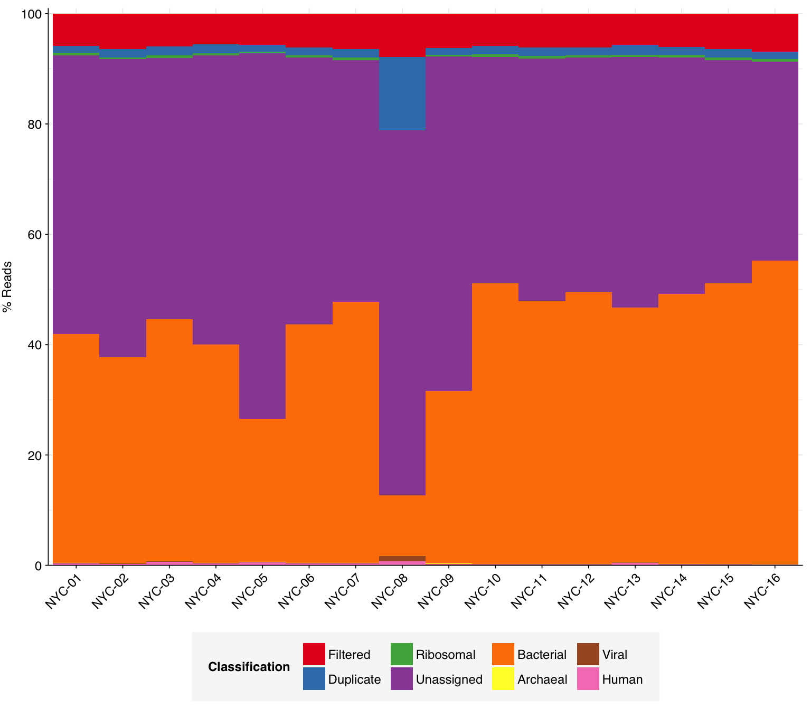
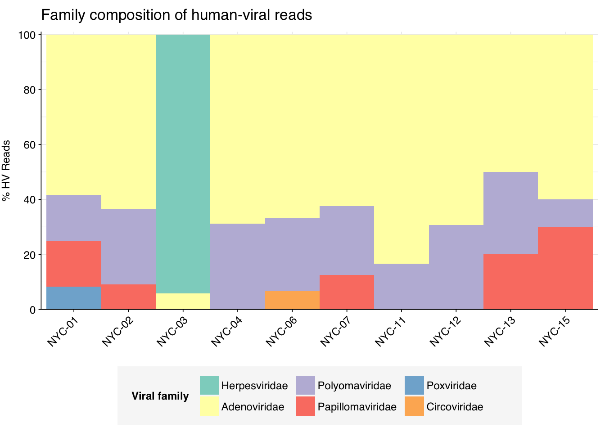
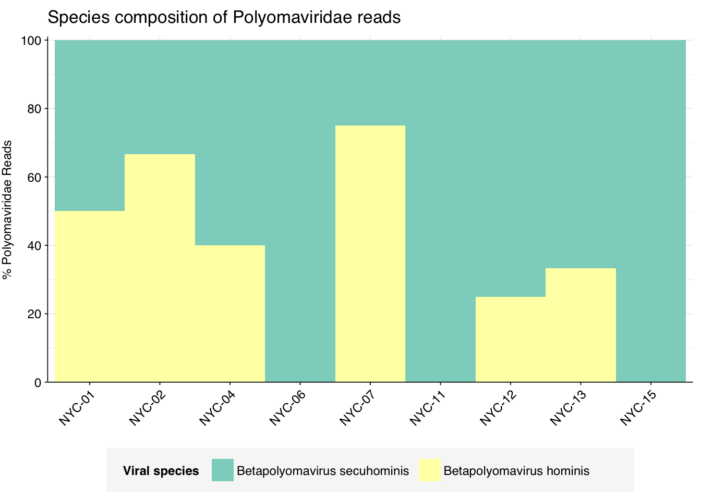
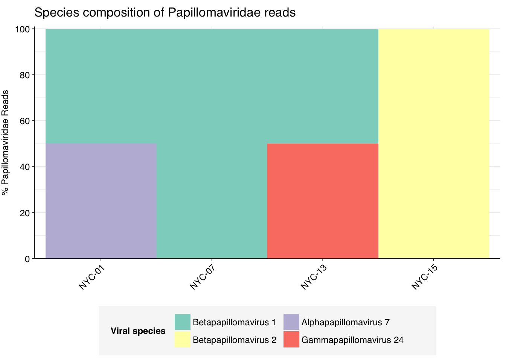

Continuing my analysis of datasets from the P2RA preprint, I analyzed the data from Maritz et al. (2019), a study that used DNA sequencing of wastewater samples to characterize protist diversity and temporal diversity in New York City. Samples for this study underwent direct DNA extraction without a dedicated concentration step, then underwent library prep and Illumina sequencing on a HiSeq Rapid Run (2x250bp).
The raw data
16 samples were collected from 14 treatment plants in NYC in November 2014. These samples yielded 8.6M-18.3M (mean 10.8M) reads per sample, for a total of 172M read pairs (84 gigabases of sequence). Read qualities were mostly high; adapter levels were moderate; inferred duplication levels were low.
Code
# Importing the data is a bit more complicated this time as the samples are split across three pipeline runsdata_dir<-"../data/2024-05-01_maritz"# Data input pathslibraries_path<-file.path(data_dir, "sample-metadata.csv")basic_stats_path<-file.path(data_dir, "qc_basic_stats.tsv.gz")adapter_stats_path<-file.path(data_dir, "qc_adapter_stats.tsv.gz")quality_base_stats_path<-file.path(data_dir, "qc_quality_base_stats.tsv.gz")quality_seq_stats_path<-file.path(data_dir, "qc_quality_sequence_stats.tsv.gz")# Import libraries and extract metadata from sample nameslibraries_raw<-lapply(libraries_path, read_csv, show_col_types =FALSE)%>%bind_rowslibraries<-libraries_raw%>%mutate(sample =fct_inorder(sample))
Code
# Import QC datastages<-c("raw_concat", "cleaned", "dedup", "ribo_initial", "ribo_secondary")import_basic<-function(paths){lapply(paths, read_tsv, show_col_types =FALSE)%>%bind_rows%>%inner_join(libraries, by="sample")%>%arrange(sample)%>%mutate(stage =factor(stage, levels =stages), sample =fct_inorder(sample))}import_basic_paired<-function(paths){import_basic(paths)%>%arrange(read_pair)%>%mutate(read_pair =fct_inorder(as.character(read_pair)))}basic_stats<-import_basic(basic_stats_path)adapter_stats<-import_basic_paired(adapter_stats_path)quality_base_stats<-import_basic_paired(quality_base_stats_path)quality_seq_stats<-import_basic_paired(quality_seq_stats_path)# Filter to raw databasic_stats_raw<-basic_stats%>%filter(stage=="raw_concat")adapter_stats_raw<-adapter_stats%>%filter(stage=="raw_concat")quality_base_stats_raw<-quality_base_stats%>%filter(stage=="raw_concat")quality_seq_stats_raw<-quality_seq_stats%>%filter(stage=="raw_concat")# Get key values for readoutraw_read_counts<-basic_stats_raw%>%ungroup%>%summarize(rmin =min(n_read_pairs), rmax=max(n_read_pairs), rmean=mean(n_read_pairs), rtot =sum(n_read_pairs), btot =sum(n_bases_approx), dmin =min(percent_duplicates), dmax=max(percent_duplicates), dmean=mean(percent_duplicates), .groups ="drop")
About 6% of reads on average were lost during cleaning, and a further 2% during deduplication. Very few reads were lost during ribodepletion, as expected for DNA sequencing libraries.
As before, to assess the high-level composition of the reads, I ran the ribodepleted files through Kraken (using the Standard 16 database) and summarized the results with Bracken. Combining these results with the read counts above gives us a breakdown of the inferred composition of the samples:
# Prepare plotting templatesg_comp_base<-ggplot(mapping=aes(x=sample, y=p_reads, fill=classification))+theme_kitscale_y_pc_reads<-purrr::partial(scale_y_continuous, name ="% Reads", expand =c(0,0), labels =function(y)y*100)# Plot overall compositiong_comp<-g_comp_base+geom_col(data =comp, position ="stack", width=1)+scale_y_pc_reads(limits =c(0,1.01), breaks =seq(0,1,0.2))+scale_fill_brewer(palette ="Set1", name ="Classification")g_comp

Code
# Plot composition of minor componentscomp_minor<-comp%>%filter(classification%in%c("Archaeal", "Viral", "Human", "Other"))palette_minor<-brewer.pal(9, "Set1")[6:9]g_comp_minor<-g_comp_base+geom_col(data=comp_minor, position ="stack", width=1)+scale_y_pc_reads()+scale_fill_manual(values=palette_minor, name ="Classification")g_comp_minor
As in previous DNA datasets, the vast majority of classified reads were bacterial in origin. Viral fraction averaged 0.13%, though one samples (NYC-08) reached almost 1%. As is common for DNA data, viral reads were overwhelmingly dominated by Caudoviricetes phages:
Code
# Get Kraken reportsreports_path<-file.path(data_dir, "kraken_reports.tsv.gz")reports<-read_tsv(reports_path, show_col_types =FALSE)# Get viral taxonomyviral_taxa_path<-file.path(data_dir, "viral-taxids.tsv.gz")viral_taxa<-read_tsv(viral_taxa_path, show_col_types =FALSE)# Filter to viral taxakraken_reports_viral<-filter(reports, taxid%in%viral_taxa$taxid)%>%group_by(sample)%>%mutate(p_reads_viral =n_reads_clade/n_reads_clade[1])kraken_reports_viral_cleaned<-kraken_reports_viral%>%inner_join(libraries, by="sample")%>%select(-pc_reads_total, -n_reads_direct, -contains("minimizers"))%>%select(name, taxid, p_reads_viral, n_reads_clade, everything())viral_classes<-kraken_reports_viral_cleaned%>%filter(rank=="C")viral_families<-kraken_reports_viral_cleaned%>%filter(rank=="F")
Next, I investigated the human-infecting virus read content of these unenriched samples. A grand total of 199 reads were identified as putatively human-viral:
# Get raw read countsread_counts_raw<-basic_stats_raw%>%select(sample, n_reads_raw =n_read_pairs)# Get HV read countsmrg_hv<-mrg%>%mutate(hv_status =assigned_hv|highscore)%>%rename(taxid_all =taxid, taxid =taxid_best)read_counts_hv<-mrg_hv%>%filter(hv_status)%>%group_by(sample)%>%count(name="n_reads_hv")read_counts<-read_counts_raw%>%left_join(read_counts_hv, by="sample")%>%mutate(n_reads_hv =replace_na(n_reads_hv, 0))# Aggregateread_counts_grp<-read_counts%>%summarize(n_reads_raw =sum(n_reads_raw), n_reads_hv =sum(n_reads_hv), .groups="drop")%>%mutate(sample="All samples")read_counts_agg<-bind_rows(read_counts, read_counts_grp)%>%mutate(p_reads_hv =n_reads_hv/n_reads_raw, sample =factor(sample, levels=c(levels(libraries$sample), "All samples")))
Applying a disjunctive cutoff at S=20 identifies 162 read pairs as human-viral. This gives an overall relative HV abundance of \(9.42 \times 10^{-7}\); higher than Ng and Bengtsson-Palme but lower than most other datasets I’ve analyzed with this pipeline:
Code
# Visualizeg_phv_agg<-ggplot(read_counts_agg, aes(x=sample))+geom_point(aes(y=p_reads_hv))+scale_y_log10("Relative abundance of human virus reads")+theme_kitg_phv_agg
In investigating the taxonomy of human-infecting virus reads, I restricted my analysis to samples with more than 5 HV read pairs total across all viruses, to reduce noise arising from extremely low HV read counts in some samples. 10 samples met this criterion.
At the family level, most samples were dominated by Adenoviridae, Polyomaviridae and Papillomaviridae. However, one sample, NYC-03, was overwhelmingly dominated by Herpesviridae:
Code
# Get viral taxon names for putative HV readsviral_taxa$name[viral_taxa$taxid==249588]<-"Mamastrovirus"viral_taxa$name[viral_taxa$taxid==194960]<-"Kobuvirus"viral_taxa$name[viral_taxa$taxid==688449]<-"Salivirus"viral_taxa$name[viral_taxa$taxid==585893]<-"Picobirnaviridae"viral_taxa$name[viral_taxa$taxid==333922]<-"Betapapillomavirus"viral_taxa$name[viral_taxa$taxid==334207]<-"Betapapillomavirus 3"viral_taxa$name[viral_taxa$taxid==369960]<-"Porcine type-C oncovirus"viral_taxa$name[viral_taxa$taxid==333924]<-"Betapapillomavirus 2"viral_taxa$name[viral_taxa$taxid==687329]<-"Anelloviridae"viral_taxa$name[viral_taxa$taxid==325455]<-"Gammapapillomavirus"viral_taxa$name[viral_taxa$taxid==333750]<-"Alphapapillomavirus"viral_taxa$name[viral_taxa$taxid==694002]<-"Betacoronavirus"viral_taxa$name[viral_taxa$taxid==334202]<-"Mupapillomavirus"viral_taxa$name[viral_taxa$taxid==197911]<-"Alphainfluenzavirus"viral_taxa$name[viral_taxa$taxid==186938]<-"Respirovirus"viral_taxa$name[viral_taxa$taxid==333926]<-"Gammapapillomavirus 1"viral_taxa$name[viral_taxa$taxid==337051]<-"Betapapillomavirus 1"viral_taxa$name[viral_taxa$taxid==337043]<-"Alphapapillomavirus 4"viral_taxa$name[viral_taxa$taxid==694003]<-"Betacoronavirus 1"viral_taxa$name[viral_taxa$taxid==334204]<-"Mupapillomavirus 2"viral_taxa$name[viral_taxa$taxid==334208]<-"Betapapillomavirus 4"viral_taxa$name[viral_taxa$taxid==333928]<-"Gammapapillomavirus 2"viral_taxa$name[viral_taxa$taxid==337039]<-"Alphapapillomavirus 2"viral_taxa$name[viral_taxa$taxid==333929]<-"Gammapapillomavirus 3"viral_taxa$name[viral_taxa$taxid==337042]<-"Alphapapillomavirus 7"viral_taxa$name[viral_taxa$taxid==334203]<-"Mupapillomavirus 1"viral_taxa$name[viral_taxa$taxid==333757]<-"Alphapapillomavirus 8"viral_taxa$name[viral_taxa$taxid==337050]<-"Alphapapillomavirus 6"viral_taxa$name[viral_taxa$taxid==333767]<-"Alphapapillomavirus 3"viral_taxa$name[viral_taxa$taxid==333754]<-"Alphapapillomavirus 10"viral_taxa$name[viral_taxa$taxid==687363]<-"Torque teno virus 24"viral_taxa$name[viral_taxa$taxid==687342]<-"Torque teno virus 3"viral_taxa$name[viral_taxa$taxid==687359]<-"Torque teno virus 20"viral_taxa$name[viral_taxa$taxid==194441]<-"Primate T-lymphotropic virus 2"viral_taxa$name[viral_taxa$taxid==334209]<-"Betapapillomavirus 5"viral_taxa$name[viral_taxa$taxid==194965]<-"Aichivirus B"viral_taxa$name[viral_taxa$taxid==333930]<-"Gammapapillomavirus 4"viral_taxa$name[viral_taxa$taxid==337048]<-"Alphapapillomavirus 1"viral_taxa$name[viral_taxa$taxid==337041]<-"Alphapapillomavirus 9"viral_taxa$name[viral_taxa$taxid==337049]<-"Alphapapillomavirus 11"viral_taxa$name[viral_taxa$taxid==337044]<-"Alphapapillomavirus 5"# Filter samples and add viral taxa informationsamples_keep<-read_counts%>%filter(n_reads_hv>5)%>%pull(sample)mrg_hv_named<-mrg_hv%>%filter(sample%in%samples_keep, hv_status)%>%left_join(viral_taxa, by="taxid")# Discover viral species & genera for HV readsraise_rank<-function(read_db, taxid_db, out_rank="species", verbose=FALSE){# Get higher ranks than search rankranks<-c("subspecies", "species", "subgenus", "genus", "subfamily", "family", "suborder", "order", "class", "subphylum", "phylum", "kingdom", "superkingdom")rank_match<-which.max(ranks==out_rank)high_ranks<-ranks[rank_match:length(ranks)]# Merge read DB and taxid DBreads<-read_db%>%select(-parent_taxid, -rank, -name)%>%left_join(taxid_db, by="taxid")# Extract sequences that are already at appropriate rankreads_rank<-filter(reads, rank==out_rank)# Drop sequences at a higher rank and return unclassified sequencesreads_norank<-reads%>%filter(rank!=out_rank, !rank%in%high_ranks, !is.na(taxid))while(nrow(reads_norank)>0){# As long as there are unclassified sequences...# Promote read taxids and re-merge with taxid DB, then re-classify and filterreads_remaining<-reads_norank%>%mutate(taxid =parent_taxid)%>%select(-parent_taxid, -rank, -name)%>%left_join(taxid_db, by="taxid")reads_rank<-reads_remaining%>%filter(rank==out_rank)%>%bind_rows(reads_rank)reads_norank<-reads_remaining%>%filter(rank!=out_rank, !rank%in%high_ranks, !is.na(taxid))}# Finally, extract and append reads that were excluded during the processreads_dropped<-reads%>%filter(!seq_id%in%reads_rank$seq_id)reads_out<-reads_rank%>%bind_rows(reads_dropped)%>%select(-parent_taxid, -rank, -name)%>%left_join(taxid_db, by="taxid")return(reads_out)}hv_reads_species<-raise_rank(mrg_hv_named, viral_taxa, "species")hv_reads_genus<-raise_rank(mrg_hv_named, viral_taxa, "genus")hv_reads_family<-raise_rank(mrg_hv_named, viral_taxa, "family")
Code
threshold_major_family<-0.02# Count reads for each human-viral familyhv_family_counts<-hv_reads_family%>%group_by(sample, name, taxid)%>%count(name ="n_reads_hv")%>%group_by(sample)%>%mutate(p_reads_hv =n_reads_hv/sum(n_reads_hv))# Identify high-ranking families and group othershv_family_major_tab<-hv_family_counts%>%group_by(name)%>%filter(p_reads_hv==max(p_reads_hv))%>%filter(row_number()==1)%>%arrange(desc(p_reads_hv))%>%filter(p_reads_hv>threshold_major_family)hv_family_counts_major<-hv_family_counts%>%mutate(name_display =ifelse(name%in%hv_family_major_tab$name, name, "Other"))%>%group_by(sample, name_display)%>%summarize(n_reads_hv =sum(n_reads_hv), p_reads_hv =sum(p_reads_hv), .groups="drop")%>%mutate(name_display =factor(name_display, levels =c(hv_family_major_tab$name, "Other")))hv_family_counts_display<-hv_family_counts_major%>%rename(p_reads =p_reads_hv, classification =name_display)# Plotg_hv_family<-g_comp_base+geom_col(data=hv_family_counts_display, position ="stack", width=1)+scale_y_continuous(name="% HV Reads", limits=c(0,1.01), breaks =seq(0,1,0.2), expand=c(0,0), labels =function(y)y*100)+scale_fill_manual(values=palette_viral, name ="Viral family")+labs(title="Family composition of human-viral reads")+guides(fill=guide_legend(ncol=4))+theme(plot.title =element_text(size=rel(1.4), hjust=0, face="plain"))g_hv_family

Code
# Get most prominent families for texthv_family_collate<-hv_family_counts%>%group_by(name, taxid)%>%summarize(n_reads_tot =sum(n_reads_hv), p_reads_max =max(p_reads_hv), .groups="drop")%>%arrange(desc(n_reads_tot))
In investigating individual viral families, to avoid distortions from a few rare reads, I restricted myself to samples where that family made up at least 10% of human-viral reads:
Code
threshold_major_species<-0.05taxid_adeno<-10508# Get set of adenoviridae readsadeno_samples<-hv_family_counts%>%filter(taxid==taxid_adeno)%>%filter(p_reads_hv>=0.1)%>%pull(sample)adeno_ids<-hv_reads_family%>%filter(taxid==taxid_adeno, sample%in%adeno_samples)%>%pull(seq_id)# Count reads for each adenoviridae speciesadeno_species_counts<-hv_reads_species%>%filter(seq_id%in%adeno_ids)%>%group_by(sample, name, taxid)%>%count(name ="n_reads_hv")%>%group_by(sample)%>%mutate(p_reads_adeno =n_reads_hv/sum(n_reads_hv))# Identify high-ranking families and group othersadeno_species_major_tab<-adeno_species_counts%>%group_by(name)%>%filter(p_reads_adeno==max(p_reads_adeno))%>%filter(row_number()==1)%>%arrange(desc(p_reads_adeno))%>%filter(p_reads_adeno>threshold_major_species)adeno_species_counts_major<-adeno_species_counts%>%mutate(name_display =ifelse(name%in%adeno_species_major_tab$name, name, "Other"))%>%group_by(sample, name_display)%>%summarize(n_reads_adeno =sum(n_reads_hv), p_reads_adeno =sum(p_reads_adeno), .groups="drop")%>%mutate(name_display =factor(name_display, levels =c(adeno_species_major_tab$name, "Other")))adeno_species_counts_display<-adeno_species_counts_major%>%rename(p_reads =p_reads_adeno, classification =name_display)# Plotg_adeno_species<-g_comp_base+geom_col(data=adeno_species_counts_display, position ="stack", width=1)+scale_y_continuous(name="% Adenoviridae Reads", limits=c(0,1.01), breaks =seq(0,1,0.2), expand=c(0,0), labels =function(y)y*100)+scale_fill_manual(values=palette_viral, name ="Viral species")+labs(title="Species composition of Adenoviridae reads")+guides(fill=guide_legend(ncol=3))+theme(plot.title =element_text(size=rel(1.4), hjust=0, face="plain"))g_adeno_species
Code
# Get most prominent species for textadeno_species_collate<-adeno_species_counts%>%group_by(name, taxid)%>%summarize(n_reads_tot =sum(n_reads_hv), p_reads_mean =mean(p_reads_adeno), .groups="drop")%>%arrange(desc(n_reads_tot))
Code
threshold_major_species<-0.1taxid_polyoma<-151341# Get set of polyomaviridae readspolyoma_samples<-hv_family_counts%>%filter(taxid==taxid_polyoma)%>%filter(p_reads_hv>=0.1)%>%pull(sample)polyoma_ids<-hv_reads_family%>%filter(taxid==taxid_polyoma, sample%in%polyoma_samples)%>%pull(seq_id)# Count reads for each polyomaviridae speciespolyoma_species_counts<-hv_reads_species%>%filter(seq_id%in%polyoma_ids)%>%group_by(sample, name, taxid)%>%count(name ="n_reads_hv")%>%group_by(sample)%>%mutate(p_reads_polyoma =n_reads_hv/sum(n_reads_hv))# Identify high-ranking families and group otherspolyoma_species_major_tab<-polyoma_species_counts%>%group_by(name)%>%filter(p_reads_polyoma==max(p_reads_polyoma))%>%filter(row_number()==1)%>%arrange(desc(p_reads_polyoma))%>%filter(p_reads_polyoma>threshold_major_species)polyoma_species_counts_major<-polyoma_species_counts%>%mutate(name_display =ifelse(name%in%polyoma_species_major_tab$name, name, "Other"))%>%group_by(sample, name_display)%>%summarize(n_reads_polyoma =sum(n_reads_hv), p_reads_polyoma =sum(p_reads_polyoma), .groups="drop")%>%mutate(name_display =factor(name_display, levels =c(polyoma_species_major_tab$name, "Other")))polyoma_species_counts_display<-polyoma_species_counts_major%>%rename(p_reads =p_reads_polyoma, classification =name_display)# Plotg_polyoma_species<-g_comp_base+geom_col(data=polyoma_species_counts_display, position ="stack", width=1)+scale_y_continuous(name="% Polyomaviridae Reads", limits=c(0,1.01), breaks =seq(0,1,0.2), expand=c(0,0), labels =function(y)y*100)+scale_fill_manual(values=palette_viral, name ="Viral species")+labs(title="Species composition of Polyomaviridae reads")+guides(fill=guide_legend(ncol=3))+theme(plot.title =element_text(size=rel(1.4), hjust=0, face="plain"))g_polyoma_species

Code
# Get most prominent species for textpolyoma_species_collate<-polyoma_species_counts%>%group_by(name, taxid)%>%summarize(n_reads_tot =sum(n_reads_hv), p_reads_mean =mean(p_reads_polyoma), .groups="drop")%>%arrange(desc(n_reads_tot))
Code
threshold_major_species<-0.1taxid_papilloma<-151340# Get set of papillomaviridae readspapilloma_samples<-hv_family_counts%>%filter(taxid==taxid_papilloma)%>%filter(p_reads_hv>=0.1)%>%pull(sample)papilloma_ids<-hv_reads_family%>%filter(taxid==taxid_papilloma, sample%in%papilloma_samples)%>%pull(seq_id)# Count reads for each papillomaviridae speciespapilloma_species_counts<-hv_reads_species%>%filter(seq_id%in%papilloma_ids)%>%group_by(sample, name, taxid)%>%count(name ="n_reads_hv")%>%group_by(sample)%>%mutate(p_reads_papilloma =n_reads_hv/sum(n_reads_hv))# Identify high-ranking families and group otherspapilloma_species_major_tab<-papilloma_species_counts%>%group_by(name)%>%filter(p_reads_papilloma==max(p_reads_papilloma))%>%filter(row_number()==1)%>%arrange(desc(p_reads_papilloma))%>%filter(p_reads_papilloma>threshold_major_species)papilloma_species_counts_major<-papilloma_species_counts%>%mutate(name_display =ifelse(name%in%papilloma_species_major_tab$name, name, "Other"))%>%group_by(sample, name_display)%>%summarize(n_reads_papilloma =sum(n_reads_hv), p_reads_papilloma =sum(p_reads_papilloma), .groups="drop")%>%mutate(name_display =factor(name_display, levels =c(papilloma_species_major_tab$name, "Other")))papilloma_species_counts_display<-papilloma_species_counts_major%>%rename(p_reads =p_reads_papilloma, classification =name_display)# Plotg_papilloma_species<-g_comp_base+geom_col(data=papilloma_species_counts_display, position ="stack", width=1)+scale_y_continuous(name="% Papillomaviridae Reads", limits=c(0,1.01), breaks =seq(0,1,0.2), expand=c(0,0), labels =function(y)y*100)+scale_fill_manual(values=palette_viral, name ="Viral species")+labs(title="Species composition of Papillomaviridae reads")+guides(fill=guide_legend(ncol=3))+theme(plot.title =element_text(size=rel(1.4), hjust=0, face="plain"))g_papilloma_species

Code
# Get most prominent species for textpapilloma_species_collate<-papilloma_species_counts%>%group_by(name, taxid)%>%summarize(n_reads_tot =sum(n_reads_hv), p_reads_mean =mean(p_reads_papilloma), .groups="drop")%>%arrange(desc(n_reads_tot))
Code
threshold_major_species<-0.1taxid_herpes<-10292# Get set of herpesviridae readsherpes_samples<-hv_family_counts%>%filter(taxid==taxid_herpes)%>%filter(p_reads_hv>=0.1)%>%pull(sample)herpes_ids<-hv_reads_family%>%filter(taxid==taxid_herpes, sample%in%herpes_samples)%>%pull(seq_id)# Count reads for each herpesviridae speciesherpes_species_counts<-hv_reads_species%>%filter(seq_id%in%herpes_ids)%>%group_by(sample, name, taxid)%>%count(name ="n_reads_hv")%>%group_by(sample)%>%mutate(p_reads_herpes =n_reads_hv/sum(n_reads_hv))# Identify high-ranking families and group othersherpes_species_major_tab<-herpes_species_counts%>%group_by(name)%>%filter(p_reads_herpes==max(p_reads_herpes))%>%filter(row_number()==1)%>%arrange(desc(p_reads_herpes))%>%filter(p_reads_herpes>threshold_major_species)herpes_species_counts_major<-herpes_species_counts%>%mutate(name_display =ifelse(name%in%herpes_species_major_tab$name, name, "Other"))%>%group_by(sample, name_display)%>%summarize(n_reads_herpes =sum(n_reads_hv), p_reads_herpes =sum(p_reads_herpes), .groups="drop")%>%mutate(name_display =factor(name_display, levels =c(herpes_species_major_tab$name, "Other")))herpes_species_counts_display<-herpes_species_counts_major%>%rename(p_reads =p_reads_herpes, classification =name_display)# Plotg_herpes_species<-g_comp_base+geom_col(data=herpes_species_counts_display, position ="stack", width=1)+scale_y_continuous(name="% Herpesviridae Reads", limits=c(0,1.01), breaks =seq(0,1,0.2), expand=c(0,0), labels =function(y)y*100)+scale_fill_manual(values=palette_viral, name ="Viral species")+labs(title="Species composition of Herpesviridae reads")+guides(fill=guide_legend(ncol=3))+theme(plot.title =element_text(size=rel(1.4), hjust=0, face="plain"))g_herpes_species
Code
# Get most prominent species for textherpes_species_collate<-herpes_species_counts%>%group_by(name, taxid)%>%summarize(n_reads_tot =sum(n_reads_hv), p_reads_mean =mean(p_reads_herpes), .groups="drop")%>%arrange(desc(n_reads_tot))
I was a bit suspicious of this last result, given that it only occurred in one sample, but according to BLASTN, at least, these human gammaherpesvirus 4 (a.k.a. EBV) matches are real:
I’ve had trouble with this dataset previously, so I was surprised at how well this analysis went. It seems the improvements I’ve made to the pipeline over the last couple of months have really had an effect. Like other DNA wastewater datasets I’ve looked at recently, this one (a) has very low HV relative abundance overall, and (b) shows a very high preponderance of human mastadenovirus F. I have one more DNA dataset from the P2RA study to analyze with this pipeline, so we’ll see if this pattern persists there.
Source Code
---title: "Workflow analysis of Maritz et al. (2019)"subtitle: "Wastewater from NYC."author: "Will Bradshaw"date: 2024-05-01format: html: code-fold: true code-tools: true code-link: true df-print: pagededitor: visualtitle-block-banner: black---```{r}#| label: preamble#| include: false# Load packageslibrary(tidyverse)library(cowplot)library(patchwork)library(fastqcr)library(RColorBrewer)source("../scripts/aux_plot-theme.R")# GGplot themes and scalestheme_base <- theme_base +theme(aspect.ratio =NULL)theme_rotate <- theme_base +theme(axis.text.x =element_text(hjust =1, angle =45),)theme_kit <- theme_rotate +theme(axis.title.x =element_blank(),)theme_xblank <- theme_kit +theme(axis.text.x =element_blank())tnl <-theme(legend.position ="none")```Continuing my analysis of datasets from the [P2RA preprint](https://doi.org/10.1101/2023.12.22.23300450), I analyzed the data from [Maritz et al. (2019)](https://doi.org/10.1038/s41396-019-0467-z), a study that used DNA sequencing of wastewater samples to characterize protist diversity and temporal diversity in New York City. Samples for this study underwent direct DNA extraction without a dedicated concentration step, then underwent library prep and Illumina sequencing on a HiSeq Rapid Run (2x250bp).# The raw data16 samples were collected from 14 treatment plants in NYC in November 2014. These samples yielded 8.6M-18.3M (mean 10.8M) reads per sample, for a total of 172M read pairs (84 gigabases of sequence). Read qualities were mostly high; adapter levels were moderate; inferred duplication levels were low.```{r}#| warning: false#| label: import-qc-data# Importing the data is a bit more complicated this time as the samples are split across three pipeline runsdata_dir <-"../data/2024-05-01_maritz"# Data input pathslibraries_path <-file.path(data_dir, "sample-metadata.csv")basic_stats_path <-file.path(data_dir, "qc_basic_stats.tsv.gz")adapter_stats_path <-file.path(data_dir, "qc_adapter_stats.tsv.gz")quality_base_stats_path <-file.path(data_dir, "qc_quality_base_stats.tsv.gz")quality_seq_stats_path <-file.path(data_dir, "qc_quality_sequence_stats.tsv.gz")# Import libraries and extract metadata from sample nameslibraries_raw <-lapply(libraries_path, read_csv, show_col_types =FALSE) %>% bind_rowslibraries <- libraries_raw %>%mutate(sample =fct_inorder(sample))``````{r}#| label: process-qc-data# Import QC datastages <-c("raw_concat", "cleaned", "dedup", "ribo_initial", "ribo_secondary")import_basic <-function(paths){lapply(paths, read_tsv, show_col_types =FALSE) %>% bind_rows %>%inner_join(libraries, by="sample") %>%arrange(sample) %>%mutate(stage =factor(stage, levels = stages),sample =fct_inorder(sample))}import_basic_paired <-function(paths){import_basic(paths) %>%arrange(read_pair) %>%mutate(read_pair =fct_inorder(as.character(read_pair)))}basic_stats <-import_basic(basic_stats_path)adapter_stats <-import_basic_paired(adapter_stats_path)quality_base_stats <-import_basic_paired(quality_base_stats_path)quality_seq_stats <-import_basic_paired(quality_seq_stats_path)# Filter to raw databasic_stats_raw <- basic_stats %>%filter(stage =="raw_concat")adapter_stats_raw <- adapter_stats %>%filter(stage =="raw_concat")quality_base_stats_raw <- quality_base_stats %>%filter(stage =="raw_concat")quality_seq_stats_raw <- quality_seq_stats %>%filter(stage =="raw_concat")# Get key values for readoutraw_read_counts <- basic_stats_raw %>% ungroup %>%summarize(rmin =min(n_read_pairs), rmax=max(n_read_pairs),rmean=mean(n_read_pairs), rtot =sum(n_read_pairs),btot =sum(n_bases_approx),dmin =min(percent_duplicates), dmax=max(percent_duplicates),dmean=mean(percent_duplicates), .groups ="drop")``````{r}#| fig-width: 9#| warning: false#| label: plot-basic-stats# Prepare databasic_stats_raw_metrics <- basic_stats_raw %>%select(sample,`# Read pairs`= n_read_pairs,`Total base pairs\n(approx)`= n_bases_approx,`% Duplicates\n(FASTQC)`= percent_duplicates) %>%pivot_longer(-(sample), names_to ="metric", values_to ="value") %>%mutate(metric =fct_inorder(metric))# Set up plot templatesg_basic <-ggplot(basic_stats_raw_metrics, aes(x=sample, y=value)) +geom_col(position ="dodge") +scale_y_continuous(expand=c(0,0)) +expand_limits(y=c(0,100)) +facet_grid(metric~., scales ="free", space="free_x", switch="y") + theme_kit +theme(axis.title.y =element_blank(),strip.text.y =element_text(face="plain") )g_basic``````{r}#| label: plot-raw-quality# Set up plotting templatesg_qual_raw <-ggplot(mapping=aes(linetype=read_pair, group=interaction(sample,read_pair))) +scale_linetype_discrete(name ="Read Pair") +guides(color=guide_legend(nrow=2,byrow=TRUE),linetype =guide_legend(nrow=2,byrow=TRUE)) + theme_base# Visualize adaptersg_adapters_raw <- g_qual_raw +geom_line(aes(x=position, y=pc_adapters), data=adapter_stats_raw) +scale_y_continuous(name="% Adapters", limits=c(0,NA),breaks =seq(0,100,1), expand=c(0,0)) +scale_x_continuous(name="Position", limits=c(0,NA),breaks=seq(0,500,20), expand=c(0,0)) +facet_grid(.~adapter)g_adapters_raw# Visualize qualityg_quality_base_raw <- g_qual_raw +geom_hline(yintercept=25, linetype="dashed", color="red") +geom_hline(yintercept=30, linetype="dashed", color="red") +geom_line(aes(x=position, y=mean_phred_score), data=quality_base_stats_raw) +scale_y_continuous(name="Mean Phred score", expand=c(0,0), limits=c(10,45)) +scale_x_continuous(name="Position", limits=c(0,NA),breaks=seq(0,500,20), expand=c(0,0))g_quality_base_rawg_quality_seq_raw <- g_qual_raw +geom_vline(xintercept=25, linetype="dashed", color="red") +geom_vline(xintercept=30, linetype="dashed", color="red") +geom_line(aes(x=mean_phred_score, y=n_sequences), data=quality_seq_stats_raw) +scale_x_continuous(name="Mean Phred score", expand=c(0,0)) +scale_y_continuous(name="# Sequences", expand=c(0,0))g_quality_seq_raw```# PreprocessingAbout 6% of reads on average were lost during cleaning, and a further 2% during deduplication. Very few reads were lost during ribodepletion, as expected for DNA sequencing libraries.```{r}#| label: preproc-tablen_reads_rel <- basic_stats %>%select(sample, stage, percent_duplicates, n_read_pairs) %>%group_by(sample) %>%arrange(sample, stage) %>%mutate(p_reads_retained =replace_na(n_read_pairs /lag(n_read_pairs), 0),p_reads_lost =1- p_reads_retained,p_reads_retained_abs = n_read_pairs / n_read_pairs[1],p_reads_lost_abs =1-p_reads_retained_abs,p_reads_lost_abs_marginal =replace_na(p_reads_lost_abs -lag(p_reads_lost_abs), 0))n_reads_rel_display <- n_reads_rel %>%group_by(Stage=stage) %>%summarize(`% Total Reads Lost (Cumulative)`=paste0(round(min(p_reads_lost_abs*100),1), "-", round(max(p_reads_lost_abs*100),1), " (mean ", round(mean(p_reads_lost_abs*100),1), ")"),`% Total Reads Lost (Marginal)`=paste0(round(min(p_reads_lost_abs_marginal*100),1), "-", round(max(p_reads_lost_abs_marginal*100),1), " (mean ", round(mean(p_reads_lost_abs_marginal*100),1), ")"), .groups="drop") %>%filter(Stage !="raw_concat") %>%mutate(Stage = Stage %>% as.numeric %>%factor(labels=c("Trimming & filtering", "Deduplication", "Initial ribodepletion", "Secondary ribodepletion")))n_reads_rel_display``````{r}#| label: preproc-figures#| warning: false#| fig-height: 4#| fig-width: 6g_stage_base <-ggplot(mapping=aes(x=stage, group=sample)) + theme_kit# Plot reads over preprocessingg_reads_stages <- g_stage_base +geom_line(aes(y=n_read_pairs), data=basic_stats) +scale_y_continuous("# Read pairs", expand=c(0,0), limits=c(0,NA))g_reads_stages# Plot relative read losses during preprocessingg_reads_rel <- g_stage_base +geom_line(aes(y=p_reads_lost_abs_marginal), data=n_reads_rel) +scale_y_continuous("% Total Reads Lost", expand=c(0,0), labels =function(x) x*100)g_reads_rel```Data cleaning was very successful at removing adapters and improving read qualities:```{r}#| warning: false#| label: plot-quality#| fig-height: 7g_qual <-ggplot(mapping=aes(linetype=read_pair, group=interaction(sample,read_pair))) +scale_linetype_discrete(name ="Read Pair") +guides(color=guide_legend(nrow=2,byrow=TRUE),linetype =guide_legend(nrow=2,byrow=TRUE)) + theme_base# Visualize adaptersg_adapters <- g_qual +geom_line(aes(x=position, y=pc_adapters), data=adapter_stats) +scale_y_continuous(name="% Adapters", limits=c(0,20),breaks =seq(0,50,10), expand=c(0,0)) +scale_x_continuous(name="Position", limits=c(0,NA),breaks=seq(0,140,20), expand=c(0,0)) +facet_grid(stage~adapter)g_adapters# Visualize qualityg_quality_base <- g_qual +geom_hline(yintercept=25, linetype="dashed", color="red") +geom_hline(yintercept=30, linetype="dashed", color="red") +geom_line(aes(x=position, y=mean_phred_score), data=quality_base_stats) +scale_y_continuous(name="Mean Phred score", expand=c(0,0), limits=c(10,45)) +scale_x_continuous(name="Position", limits=c(0,NA),breaks=seq(0,140,20), expand=c(0,0)) +facet_grid(stage~.)g_quality_baseg_quality_seq <- g_qual +geom_vline(xintercept=25, linetype="dashed", color="red") +geom_vline(xintercept=30, linetype="dashed", color="red") +geom_line(aes(x=mean_phred_score, y=n_sequences), data=quality_seq_stats) +scale_x_continuous(name="Mean Phred score", expand=c(0,0)) +scale_y_continuous(name="# Sequences", expand=c(0,0)) +facet_grid(stage~.)g_quality_seq```According to FASTQC, cleaning + deduplication was very effective at reducing measured duplicate levels in the few samples that required it:```{r}#| label: preproc-dedup#| fig-height: 3.5#| fig-width: 6stage_dup <- basic_stats %>%group_by(stage) %>%summarize(dmin =min(percent_duplicates), dmax=max(percent_duplicates),dmean=mean(percent_duplicates), .groups ="drop")g_dup_stages <- g_stage_base +geom_line(aes(y=percent_duplicates), data=basic_stats) +scale_y_continuous("% Duplicates", limits=c(0,NA), expand=c(0,0))g_dup_stagesg_readlen_stages <- g_stage_base +geom_line(aes(y=mean_seq_len), data=basic_stats) +scale_y_continuous("Mean read length (nt)", expand=c(0,0), limits=c(0,NA))g_readlen_stages```# High-level compositionAs before, to assess the high-level composition of the reads, I ran the ribodepleted files through Kraken (using the Standard 16 database) and summarized the results with Bracken. Combining these results with the read counts above gives us a breakdown of the inferred composition of the samples:```{r}#| label: prepare-compositionclassifications <-c("Filtered", "Duplicate", "Ribosomal", "Unassigned","Bacterial", "Archaeal", "Viral", "Human")# Import composition datacomp_path <-file.path(data_dir, "taxonomic_composition.tsv.gz")comp <-read_tsv(comp_path, show_col_types =FALSE) %>%left_join(libraries, by="sample") %>%mutate(classification =factor(classification, levels = classifications))# Summarize compositionread_comp_summ <- comp %>%group_by(classification) %>%summarize(n_reads =sum(n_reads), .groups ="drop_last") %>%mutate(n_reads =replace_na(n_reads,0),p_reads = n_reads/sum(n_reads),pc_reads = p_reads*100)``````{r}#| label: plot-composition-all#| fig-height: 7#| fig-width: 8# Prepare plotting templatesg_comp_base <-ggplot(mapping=aes(x=sample, y=p_reads, fill=classification)) + theme_kitscale_y_pc_reads <- purrr::partial(scale_y_continuous, name ="% Reads",expand =c(0,0), labels =function(y) y*100)# Plot overall compositiong_comp <- g_comp_base +geom_col(data = comp, position ="stack", width=1) +scale_y_pc_reads(limits =c(0,1.01), breaks =seq(0,1,0.2)) +scale_fill_brewer(palette ="Set1", name ="Classification")g_comp# Plot composition of minor componentscomp_minor <- comp %>%filter(classification %in%c("Archaeal", "Viral", "Human", "Other"))palette_minor <-brewer.pal(9, "Set1")[6:9]g_comp_minor <- g_comp_base +geom_col(data=comp_minor, position ="stack", width=1) +scale_y_pc_reads() +scale_fill_manual(values=palette_minor, name ="Classification")g_comp_minor``````{r}#| label: composition-summaryp_reads_summ_group <- comp %>%mutate(classification =ifelse(classification %in%c("Filtered", "Duplicate", "Unassigned"), "Excluded", as.character(classification)),classification =fct_inorder(classification)) %>%group_by(classification, sample) %>%summarize(p_reads =sum(p_reads), .groups ="drop") %>%group_by(classification) %>%summarize(pc_min =min(p_reads)*100, pc_max =max(p_reads)*100, pc_mean =mean(p_reads)*100, .groups ="drop")p_reads_summ_prep <- p_reads_summ_group %>%mutate(classification =fct_inorder(classification),pc_min = pc_min %>%signif(digits=2) %>%sapply(format, scientific=FALSE, trim=TRUE, digits=2),pc_max = pc_max %>%signif(digits=2) %>%sapply(format, scientific=FALSE, trim=TRUE, digits=2),pc_mean = pc_mean %>%signif(digits=2) %>%sapply(format, scientific=FALSE, trim=TRUE, digits=2),display =paste0(pc_min, "-", pc_max, "% (mean ", pc_mean, "%)"))p_reads_summ <- p_reads_summ_prep %>%select(Classification=classification, `Read Fraction`=display) %>%arrange(Classification)p_reads_summ```As in previous DNA datasets, the vast majority of classified reads were bacterial in origin. Viral fraction averaged 0.13%, though one samples (NYC-08) reached almost 1%. As is common for DNA data, viral reads were overwhelmingly dominated by *Caudoviricetes* phages:```{r}#| label: extract-viral-taxa# Get Kraken reportsreports_path <-file.path(data_dir, "kraken_reports.tsv.gz")reports <-read_tsv(reports_path, show_col_types =FALSE)# Get viral taxonomyviral_taxa_path <-file.path(data_dir, "viral-taxids.tsv.gz")viral_taxa <-read_tsv(viral_taxa_path, show_col_types =FALSE)# Filter to viral taxakraken_reports_viral <-filter(reports, taxid %in% viral_taxa$taxid) %>%group_by(sample) %>%mutate(p_reads_viral = n_reads_clade/n_reads_clade[1])kraken_reports_viral_cleaned <- kraken_reports_viral %>%inner_join(libraries, by="sample") %>%select(-pc_reads_total, -n_reads_direct, -contains("minimizers")) %>%select(name, taxid, p_reads_viral, n_reads_clade, everything())viral_classes <- kraken_reports_viral_cleaned %>%filter(rank =="C")viral_families <- kraken_reports_viral_cleaned %>%filter(rank =="F")``````{r}#| label: viral-class-compositionmajor_threshold <-0.02# Identify major viral classesviral_classes_major_tab <- viral_classes %>%group_by(name, taxid) %>%summarize(p_reads_viral_max =max(p_reads_viral), .groups="drop") %>%filter(p_reads_viral_max >= major_threshold)viral_classes_major_list <- viral_classes_major_tab %>%pull(name)viral_classes_major <- viral_classes %>%filter(name %in% viral_classes_major_list) %>%select(name, taxid, sample, p_reads_viral)viral_classes_minor <- viral_classes_major %>%group_by(sample) %>%summarize(p_reads_viral_major =sum(p_reads_viral), .groups ="drop") %>%mutate(name ="Other", taxid=NA, p_reads_viral =1-p_reads_viral_major) %>%select(name, taxid, sample, p_reads_viral)viral_classes_display <-bind_rows(viral_classes_major, viral_classes_minor) %>%arrange(desc(p_reads_viral)) %>%mutate(name =factor(name, levels=c(viral_classes_major_list, "Other")),p_reads_viral =pmax(p_reads_viral, 0)) %>%rename(p_reads = p_reads_viral, classification=name)palette_viral <-c(brewer.pal(12, "Set3"), brewer.pal(8, "Dark2"))g_classes <- g_comp_base +geom_col(data=viral_classes_display, position ="stack", width=1) +scale_y_continuous(name="% Viral Reads", limits=c(0,1.01), breaks =seq(0,1,0.2),expand=c(0,0), labels =function(y) y*100) +scale_fill_manual(values=palette_viral, name ="Viral class")g_classes```# Human-infecting virus reads: validationNext, I investigated the human-infecting virus read content of these unenriched samples. A grand total of 199 reads were identified as putatively human-viral:```{r}#| label: hv-read-counts# Import HV read datahv_reads_filtered_path <-file.path(data_dir, "hv_hits_putative_filtered.tsv.gz")hv_reads_filtered <-lapply(hv_reads_filtered_path, read_tsv,show_col_types =FALSE) %>%bind_rows() %>%left_join(libraries, by="sample")# Count readsn_hv_filtered <- hv_reads_filtered %>%group_by(sample, seq_id) %>% count %>%group_by(sample) %>% count %>%inner_join(basic_stats %>%filter(stage =="ribo_initial") %>%select(sample, n_read_pairs), by="sample") %>%rename(n_putative = n, n_total = n_read_pairs) %>%mutate(p_reads = n_putative/n_total, pc_reads = p_reads *100)n_hv_filtered_summ <- n_hv_filtered %>% ungroup %>%summarize(n_putative =sum(n_putative), n_total =sum(n_total), .groups="drop") %>%mutate(p_reads = n_putative/n_total, pc_reads = p_reads*100)``````{r}#| label: plot-hv-scores#| warning: false#| fig-width: 8# Collapse multi-entry sequencesrmax <- purrr::partial(max, na.rm =TRUE)collapse <-function(x) ifelse(all(x == x[1]), x[1], paste(x, collapse="/"))mrg <- hv_reads_filtered %>%mutate(adj_score_max =pmax(adj_score_fwd, adj_score_rev, na.rm =TRUE)) %>%arrange(desc(adj_score_max)) %>%group_by(seq_id) %>%summarize(sample =collapse(sample),genome_id =collapse(genome_id),taxid_best = taxid[1],taxid =collapse(as.character(taxid)),best_alignment_score_fwd =rmax(best_alignment_score_fwd),best_alignment_score_rev =rmax(best_alignment_score_rev),query_len_fwd =rmax(query_len_fwd),query_len_rev =rmax(query_len_rev),query_seq_fwd = query_seq_fwd[!is.na(query_seq_fwd)][1],query_seq_rev = query_seq_rev[!is.na(query_seq_rev)][1],classified =rmax(classified),assigned_name =collapse(assigned_name),assigned_taxid_best = assigned_taxid[1],assigned_taxid =collapse(as.character(assigned_taxid)),assigned_hv =rmax(assigned_hv),hit_hv =rmax(hit_hv),encoded_hits =collapse(encoded_hits),adj_score_fwd =rmax(adj_score_fwd),adj_score_rev =rmax(adj_score_rev) ) %>%inner_join(libraries, by="sample") %>%mutate(kraken_label =ifelse(assigned_hv, "Kraken2 HV\nassignment",ifelse(hit_hv, "Kraken2 HV\nhit","No hit or\nassignment"))) %>%mutate(adj_score_max =pmax(adj_score_fwd, adj_score_rev),highscore = adj_score_max >=20)# Plot resultsgeom_vhist <- purrr::partial(geom_histogram, binwidth=5, boundary=0)g_vhist_base <-ggplot(mapping=aes(x=adj_score_max)) +geom_vline(xintercept=20, linetype="dashed", color="red") +facet_wrap(~kraken_label, labeller =labeller(kit =label_wrap_gen(20)), scales ="free_y") +scale_x_continuous(name ="Maximum adjusted alignment score") +scale_y_continuous(name="# Read pairs") + theme_base g_vhist_0 <- g_vhist_base +geom_vhist(data=mrg)g_vhist_0```BLASTing these reads against nt, we find that the pipeline performs well, with only a single high-scoring false-positive read:```{r}#| label: process-blast-data#| warning: false# Import paired BLAST resultsblast_paired_path <-file.path(data_dir, "hv_hits_blast_paired.tsv.gz")blast_paired <-read_tsv(blast_paired_path, show_col_types =FALSE)# Add viral statusblast_viral <-mutate(blast_paired, viral = staxid %in% viral_taxa$taxid) %>%mutate(viral_full = viral & n_reads ==2)# Compare to Kraken & Bowtie assignmentsmatch_taxid <-function(taxid_1, taxid_2){ p1 <-mapply(grepl, paste0("/", taxid_1, "$"), taxid_2) p2 <-mapply(grepl, paste0("^", taxid_1, "/"), taxid_2) p3 <-mapply(grepl, paste0("^", taxid_1, "$"), taxid_2) out <-setNames(p1|p2|p3, NULL)return(out)}mrg_assign <- mrg %>%select(sample, seq_id, taxid, assigned_taxid, adj_score_max)blast_assign <-inner_join(blast_viral, mrg_assign, by="seq_id") %>%mutate(taxid_match_bowtie =match_taxid(staxid, taxid),taxid_match_kraken =match_taxid(staxid, assigned_taxid),taxid_match_any = taxid_match_bowtie | taxid_match_kraken)blast_out <- blast_assign %>%group_by(seq_id) %>%summarize(viral_status =ifelse(any(viral_full), 2,ifelse(any(taxid_match_any), 2,ifelse(any(viral), 1, 0))),.groups ="drop")``````{r}#| label: plot-blast-results#| fig-height: 6#| warning: false# Merge BLAST results with unenriched read datamrg_blast <-full_join(mrg, blast_out, by="seq_id") %>%mutate(viral_status =replace_na(viral_status, 0),viral_status_out =ifelse(viral_status ==0, FALSE, TRUE))# Plotg_vhist_1 <- g_vhist_base +geom_vhist(data=mrg_blast, mapping=aes(fill=viral_status_out)) +scale_fill_brewer(palette ="Set1", name ="Viral status")g_vhist_1```My usual disjunctive score threshold of 20 gave precision, sensitivity, and F1 scores all \>96%:```{r}#| label: plot-f1test_sens_spec <-function(tab, score_threshold){ tab_retained <- tab %>%mutate(retain_score = (adj_score_fwd > score_threshold | adj_score_rev > score_threshold),retain = assigned_hv | retain_score) %>%group_by(viral_status_out, retain) %>% count pos_tru <- tab_retained %>%filter(viral_status_out =="TRUE", retain) %>%pull(n) %>% sum pos_fls <- tab_retained %>%filter(viral_status_out !="TRUE", retain) %>%pull(n) %>% sum neg_tru <- tab_retained %>%filter(viral_status_out !="TRUE", !retain) %>%pull(n) %>% sum neg_fls <- tab_retained %>%filter(viral_status_out =="TRUE", !retain) %>%pull(n) %>% sum sensitivity <- pos_tru / (pos_tru + neg_fls) specificity <- neg_tru / (neg_tru + pos_fls) precision <- pos_tru / (pos_tru + pos_fls) f1 <-2* precision * sensitivity / (precision + sensitivity) out <-tibble(threshold=score_threshold, sensitivity=sensitivity, specificity=specificity, precision=precision, f1=f1)return(out)}range_f1 <-function(intab, inrange=15:45){ tss <- purrr::partial(test_sens_spec, tab=intab) stats <-lapply(inrange, tss) %>% bind_rows %>%pivot_longer(!threshold, names_to="metric", values_to="value")return(stats)}stats_0 <-range_f1(mrg_blast)g_stats_0 <-ggplot(stats_0, aes(x=threshold, y=value, color=metric)) +geom_vline(xintercept=20, color ="red", linetype ="dashed") +geom_line() +scale_y_continuous(name ="Value", limits=c(0,1), breaks =seq(0,1,0.2), expand =c(0,0)) +scale_x_continuous(name ="Adjusted Score Threshold", expand =c(0,0)) +scale_color_brewer(palette="Dark2") + theme_baseg_stats_0stats_0 %>%filter(threshold ==20) %>%select(Threshold=threshold, Metric=metric, Value=value)```# Human-infecting viruses: overall relative abundance```{r}#| label: count-hv-reads# Get raw read countsread_counts_raw <- basic_stats_raw %>%select(sample, n_reads_raw = n_read_pairs)# Get HV read countsmrg_hv <- mrg %>%mutate(hv_status = assigned_hv | highscore) %>%rename(taxid_all = taxid, taxid = taxid_best)read_counts_hv <- mrg_hv %>%filter(hv_status) %>%group_by(sample) %>%count(name="n_reads_hv")read_counts <- read_counts_raw %>%left_join(read_counts_hv, by="sample") %>%mutate(n_reads_hv =replace_na(n_reads_hv, 0))# Aggregateread_counts_grp <- read_counts %>%summarize(n_reads_raw =sum(n_reads_raw),n_reads_hv =sum(n_reads_hv), .groups="drop") %>%mutate(sample="All samples")read_counts_agg <-bind_rows(read_counts, read_counts_grp) %>%mutate(p_reads_hv = n_reads_hv/n_reads_raw,sample =factor(sample, levels=c(levels(libraries$sample), "All samples")))```Applying a disjunctive cutoff at S=20 identifies 162 read pairs as human-viral. This gives an overall relative HV abundance of $9.42 \times 10^{-7}$; higher than [Ng](https://data.securebio.org/wills-public-notebook/notebooks/2024-05-01_ng.html) and [Bengtsson-Palme](https://data.securebio.org/wills-public-notebook/notebooks/2024-05-01_bengtsson-palme.html) but lower than most other datasets I've analyzed with this pipeline:```{r}#| label: plot-hv-ra#| warning: false# Visualizeg_phv_agg <-ggplot(read_counts_agg, aes(x=sample)) +geom_point(aes(y=p_reads_hv)) +scale_y_log10("Relative abundance of human virus reads") + theme_kitg_phv_agg``````{r}#| label: ra-hv-past# Collate past RA valuesra_past <-tribble(~dataset, ~ra, ~na_type, ~panel_enriched,"Brumfield", 5e-5, "RNA", FALSE,"Brumfield", 3.66e-7, "DNA", FALSE,"Spurbeck", 5.44e-6, "RNA", FALSE,"Yang", 3.62e-4, "RNA", FALSE,"Rothman (unenriched)", 1.87e-5, "RNA", FALSE,"Rothman (panel-enriched)", 3.3e-5, "RNA", TRUE,"Crits-Christoph (unenriched)", 1.37e-5, "RNA", FALSE,"Crits-Christoph (panel-enriched)", 1.26e-2, "RNA", TRUE,"Prussin (non-control)", 1.63e-5, "RNA", FALSE,"Prussin (non-control)", 4.16e-5, "DNA", FALSE,"Rosario (non-control)", 1.21e-5, "RNA", FALSE,"Rosario (non-control)", 1.50e-4, "DNA", FALSE,"Leung", 1.73e-5, "DNA", FALSE,"Brinch", 3.88e-6, "DNA", FALSE,"Bengtsson-Palme", 8.86e-8, "DNA", FALSE,"Ng", 2.90e-7, "DNA", FALSE)# Collate new RA valuesra_new <-tribble(~dataset, ~ra, ~na_type, ~panel_enriched,"Maritz", 9.42e-7, "DNA", FALSE)# Plotscale_color_na <- purrr::partial(scale_color_brewer, palette="Set1",name="Nucleic acid type")ra_comp <-bind_rows(ra_past, ra_new) %>%mutate(dataset =fct_inorder(dataset))g_ra_comp <-ggplot(ra_comp, aes(y=dataset, x=ra, color=na_type)) +geom_point() +scale_color_na() +scale_x_log10(name="Relative abundance of human virus reads") + theme_base +theme(axis.title.y =element_blank())g_ra_comp```# Human-infecting viruses: taxonomy and compositionIn investigating the taxonomy of human-infecting virus reads, I restricted my analysis to samples with more than 5 HV read pairs total across all viruses, to reduce noise arising from extremely low HV read counts in some samples. 10 samples met this criterion.At the family level, most samples were dominated by *Adenoviridae*, *Polyomaviridae* and *Papillomaviridae.* However, one sample, NYC-03, was overwhelmingly dominated by *Herpesviridae*:```{r}#| label: raise-hv-taxa# Get viral taxon names for putative HV readsviral_taxa$name[viral_taxa$taxid ==249588] <-"Mamastrovirus"viral_taxa$name[viral_taxa$taxid ==194960] <-"Kobuvirus"viral_taxa$name[viral_taxa$taxid ==688449] <-"Salivirus"viral_taxa$name[viral_taxa$taxid ==585893] <-"Picobirnaviridae"viral_taxa$name[viral_taxa$taxid ==333922] <-"Betapapillomavirus"viral_taxa$name[viral_taxa$taxid ==334207] <-"Betapapillomavirus 3"viral_taxa$name[viral_taxa$taxid ==369960] <-"Porcine type-C oncovirus"viral_taxa$name[viral_taxa$taxid ==333924] <-"Betapapillomavirus 2"viral_taxa$name[viral_taxa$taxid ==687329] <-"Anelloviridae"viral_taxa$name[viral_taxa$taxid ==325455] <-"Gammapapillomavirus"viral_taxa$name[viral_taxa$taxid ==333750] <-"Alphapapillomavirus"viral_taxa$name[viral_taxa$taxid ==694002] <-"Betacoronavirus"viral_taxa$name[viral_taxa$taxid ==334202] <-"Mupapillomavirus"viral_taxa$name[viral_taxa$taxid ==197911] <-"Alphainfluenzavirus"viral_taxa$name[viral_taxa$taxid ==186938] <-"Respirovirus"viral_taxa$name[viral_taxa$taxid ==333926] <-"Gammapapillomavirus 1"viral_taxa$name[viral_taxa$taxid ==337051] <-"Betapapillomavirus 1"viral_taxa$name[viral_taxa$taxid ==337043] <-"Alphapapillomavirus 4"viral_taxa$name[viral_taxa$taxid ==694003] <-"Betacoronavirus 1"viral_taxa$name[viral_taxa$taxid ==334204] <-"Mupapillomavirus 2"viral_taxa$name[viral_taxa$taxid ==334208] <-"Betapapillomavirus 4"viral_taxa$name[viral_taxa$taxid ==333928] <-"Gammapapillomavirus 2"viral_taxa$name[viral_taxa$taxid ==337039] <-"Alphapapillomavirus 2"viral_taxa$name[viral_taxa$taxid ==333929] <-"Gammapapillomavirus 3"viral_taxa$name[viral_taxa$taxid ==337042] <-"Alphapapillomavirus 7"viral_taxa$name[viral_taxa$taxid ==334203] <-"Mupapillomavirus 1"viral_taxa$name[viral_taxa$taxid ==333757] <-"Alphapapillomavirus 8"viral_taxa$name[viral_taxa$taxid ==337050] <-"Alphapapillomavirus 6"viral_taxa$name[viral_taxa$taxid ==333767] <-"Alphapapillomavirus 3"viral_taxa$name[viral_taxa$taxid ==333754] <-"Alphapapillomavirus 10"viral_taxa$name[viral_taxa$taxid ==687363] <-"Torque teno virus 24"viral_taxa$name[viral_taxa$taxid ==687342] <-"Torque teno virus 3"viral_taxa$name[viral_taxa$taxid ==687359] <-"Torque teno virus 20"viral_taxa$name[viral_taxa$taxid ==194441] <-"Primate T-lymphotropic virus 2"viral_taxa$name[viral_taxa$taxid ==334209] <-"Betapapillomavirus 5"viral_taxa$name[viral_taxa$taxid ==194965] <-"Aichivirus B"viral_taxa$name[viral_taxa$taxid ==333930] <-"Gammapapillomavirus 4"viral_taxa$name[viral_taxa$taxid ==337048] <-"Alphapapillomavirus 1"viral_taxa$name[viral_taxa$taxid ==337041] <-"Alphapapillomavirus 9"viral_taxa$name[viral_taxa$taxid ==337049] <-"Alphapapillomavirus 11"viral_taxa$name[viral_taxa$taxid ==337044] <-"Alphapapillomavirus 5"# Filter samples and add viral taxa informationsamples_keep <- read_counts %>%filter(n_reads_hv >5) %>%pull(sample)mrg_hv_named <- mrg_hv %>%filter(sample %in% samples_keep, hv_status) %>%left_join(viral_taxa, by="taxid") # Discover viral species & genera for HV readsraise_rank <-function(read_db, taxid_db, out_rank ="species", verbose =FALSE){# Get higher ranks than search rank ranks <-c("subspecies", "species", "subgenus", "genus", "subfamily", "family", "suborder", "order", "class", "subphylum", "phylum", "kingdom", "superkingdom") rank_match <-which.max(ranks == out_rank) high_ranks <- ranks[rank_match:length(ranks)]# Merge read DB and taxid DB reads <- read_db %>%select(-parent_taxid, -rank, -name) %>%left_join(taxid_db, by="taxid")# Extract sequences that are already at appropriate rank reads_rank <-filter(reads, rank == out_rank)# Drop sequences at a higher rank and return unclassified sequences reads_norank <- reads %>%filter(rank != out_rank, !rank %in% high_ranks, !is.na(taxid))while(nrow(reads_norank) >0){ # As long as there are unclassified sequences...# Promote read taxids and re-merge with taxid DB, then re-classify and filter reads_remaining <- reads_norank %>%mutate(taxid = parent_taxid) %>%select(-parent_taxid, -rank, -name) %>%left_join(taxid_db, by="taxid") reads_rank <- reads_remaining %>%filter(rank == out_rank) %>%bind_rows(reads_rank) reads_norank <- reads_remaining %>%filter(rank != out_rank, !rank %in% high_ranks, !is.na(taxid)) }# Finally, extract and append reads that were excluded during the process reads_dropped <- reads %>%filter(!seq_id %in% reads_rank$seq_id) reads_out <- reads_rank %>%bind_rows(reads_dropped) %>%select(-parent_taxid, -rank, -name) %>%left_join(taxid_db, by="taxid")return(reads_out)}hv_reads_species <-raise_rank(mrg_hv_named, viral_taxa, "species")hv_reads_genus <-raise_rank(mrg_hv_named, viral_taxa, "genus")hv_reads_family <-raise_rank(mrg_hv_named, viral_taxa, "family")``````{r}#| label: hv-family#| fig-height: 5#| fig-width: 7threshold_major_family <-0.02# Count reads for each human-viral familyhv_family_counts <- hv_reads_family %>%group_by(sample, name, taxid) %>%count(name ="n_reads_hv") %>%group_by(sample) %>%mutate(p_reads_hv = n_reads_hv/sum(n_reads_hv))# Identify high-ranking families and group othershv_family_major_tab <- hv_family_counts %>%group_by(name) %>%filter(p_reads_hv ==max(p_reads_hv)) %>%filter(row_number() ==1) %>%arrange(desc(p_reads_hv)) %>%filter(p_reads_hv > threshold_major_family)hv_family_counts_major <- hv_family_counts %>%mutate(name_display =ifelse(name %in% hv_family_major_tab$name, name, "Other")) %>%group_by(sample, name_display) %>%summarize(n_reads_hv =sum(n_reads_hv), p_reads_hv =sum(p_reads_hv), .groups="drop") %>%mutate(name_display =factor(name_display, levels =c(hv_family_major_tab$name, "Other")))hv_family_counts_display <- hv_family_counts_major %>%rename(p_reads = p_reads_hv, classification = name_display)# Plotg_hv_family <- g_comp_base +geom_col(data=hv_family_counts_display, position ="stack", width=1) +scale_y_continuous(name="% HV Reads", limits=c(0,1.01), breaks =seq(0,1,0.2),expand=c(0,0), labels =function(y) y*100) +scale_fill_manual(values=palette_viral, name ="Viral family") +labs(title="Family composition of human-viral reads") +guides(fill=guide_legend(ncol=4)) +theme(plot.title =element_text(size=rel(1.4), hjust=0, face="plain"))g_hv_family# Get most prominent families for texthv_family_collate <- hv_family_counts %>%group_by(name, taxid) %>%summarize(n_reads_tot =sum(n_reads_hv),p_reads_max =max(p_reads_hv), .groups="drop") %>%arrange(desc(n_reads_tot))```In investigating individual viral families, to avoid distortions from a few rare reads, I restricted myself to samples where that family made up at least 10% of human-viral reads:```{r}#| label: hv-species-adeno#| fig-height: 5#| fig-width: 7threshold_major_species <-0.05taxid_adeno <-10508# Get set of adenoviridae readsadeno_samples <- hv_family_counts %>%filter(taxid == taxid_adeno) %>%filter(p_reads_hv >=0.1) %>%pull(sample)adeno_ids <- hv_reads_family %>%filter(taxid == taxid_adeno, sample %in% adeno_samples) %>%pull(seq_id)# Count reads for each adenoviridae speciesadeno_species_counts <- hv_reads_species %>%filter(seq_id %in% adeno_ids) %>%group_by(sample, name, taxid) %>%count(name ="n_reads_hv") %>%group_by(sample) %>%mutate(p_reads_adeno = n_reads_hv/sum(n_reads_hv))# Identify high-ranking families and group othersadeno_species_major_tab <- adeno_species_counts %>%group_by(name) %>%filter(p_reads_adeno ==max(p_reads_adeno)) %>%filter(row_number() ==1) %>%arrange(desc(p_reads_adeno)) %>%filter(p_reads_adeno > threshold_major_species)adeno_species_counts_major <- adeno_species_counts %>%mutate(name_display =ifelse(name %in% adeno_species_major_tab$name, name, "Other")) %>%group_by(sample, name_display) %>%summarize(n_reads_adeno =sum(n_reads_hv),p_reads_adeno =sum(p_reads_adeno), .groups="drop") %>%mutate(name_display =factor(name_display, levels =c(adeno_species_major_tab$name, "Other")))adeno_species_counts_display <- adeno_species_counts_major %>%rename(p_reads = p_reads_adeno, classification = name_display)# Plotg_adeno_species <- g_comp_base +geom_col(data=adeno_species_counts_display, position ="stack", width=1) +scale_y_continuous(name="% Adenoviridae Reads", limits=c(0,1.01), breaks =seq(0,1,0.2),expand=c(0,0), labels =function(y) y*100) +scale_fill_manual(values=palette_viral, name ="Viral species") +labs(title="Species composition of Adenoviridae reads") +guides(fill=guide_legend(ncol=3)) +theme(plot.title =element_text(size=rel(1.4), hjust=0, face="plain"))g_adeno_species# Get most prominent species for textadeno_species_collate <- adeno_species_counts %>%group_by(name, taxid) %>%summarize(n_reads_tot =sum(n_reads_hv), p_reads_mean =mean(p_reads_adeno), .groups="drop") %>%arrange(desc(n_reads_tot))``````{r}#| label: hv-species-polyoma#| fig-height: 5#| fig-width: 7threshold_major_species <-0.1taxid_polyoma <-151341# Get set of polyomaviridae readspolyoma_samples <- hv_family_counts %>%filter(taxid == taxid_polyoma) %>%filter(p_reads_hv >=0.1) %>%pull(sample)polyoma_ids <- hv_reads_family %>%filter(taxid == taxid_polyoma, sample %in% polyoma_samples) %>%pull(seq_id)# Count reads for each polyomaviridae speciespolyoma_species_counts <- hv_reads_species %>%filter(seq_id %in% polyoma_ids) %>%group_by(sample, name, taxid) %>%count(name ="n_reads_hv") %>%group_by(sample) %>%mutate(p_reads_polyoma = n_reads_hv/sum(n_reads_hv))# Identify high-ranking families and group otherspolyoma_species_major_tab <- polyoma_species_counts %>%group_by(name) %>%filter(p_reads_polyoma ==max(p_reads_polyoma)) %>%filter(row_number() ==1) %>%arrange(desc(p_reads_polyoma)) %>%filter(p_reads_polyoma > threshold_major_species)polyoma_species_counts_major <- polyoma_species_counts %>%mutate(name_display =ifelse(name %in% polyoma_species_major_tab$name, name, "Other")) %>%group_by(sample, name_display) %>%summarize(n_reads_polyoma =sum(n_reads_hv),p_reads_polyoma =sum(p_reads_polyoma), .groups="drop") %>%mutate(name_display =factor(name_display, levels =c(polyoma_species_major_tab$name, "Other")))polyoma_species_counts_display <- polyoma_species_counts_major %>%rename(p_reads = p_reads_polyoma, classification = name_display)# Plotg_polyoma_species <- g_comp_base +geom_col(data=polyoma_species_counts_display, position ="stack", width=1) +scale_y_continuous(name="% Polyomaviridae Reads", limits=c(0,1.01), breaks =seq(0,1,0.2),expand=c(0,0), labels =function(y) y*100) +scale_fill_manual(values=palette_viral, name ="Viral species") +labs(title="Species composition of Polyomaviridae reads") +guides(fill=guide_legend(ncol=3)) +theme(plot.title =element_text(size=rel(1.4), hjust=0, face="plain"))g_polyoma_species# Get most prominent species for textpolyoma_species_collate <- polyoma_species_counts %>%group_by(name, taxid) %>%summarize(n_reads_tot =sum(n_reads_hv), p_reads_mean =mean(p_reads_polyoma), .groups="drop") %>%arrange(desc(n_reads_tot))``````{r}#| label: hv-species-papilloma#| fig-height: 5#| fig-width: 7threshold_major_species <-0.1taxid_papilloma <-151340# Get set of papillomaviridae readspapilloma_samples <- hv_family_counts %>%filter(taxid == taxid_papilloma) %>%filter(p_reads_hv >=0.1) %>%pull(sample)papilloma_ids <- hv_reads_family %>%filter(taxid == taxid_papilloma, sample %in% papilloma_samples) %>%pull(seq_id)# Count reads for each papillomaviridae speciespapilloma_species_counts <- hv_reads_species %>%filter(seq_id %in% papilloma_ids) %>%group_by(sample, name, taxid) %>%count(name ="n_reads_hv") %>%group_by(sample) %>%mutate(p_reads_papilloma = n_reads_hv/sum(n_reads_hv))# Identify high-ranking families and group otherspapilloma_species_major_tab <- papilloma_species_counts %>%group_by(name) %>%filter(p_reads_papilloma ==max(p_reads_papilloma)) %>%filter(row_number() ==1) %>%arrange(desc(p_reads_papilloma)) %>%filter(p_reads_papilloma > threshold_major_species)papilloma_species_counts_major <- papilloma_species_counts %>%mutate(name_display =ifelse(name %in% papilloma_species_major_tab$name, name, "Other")) %>%group_by(sample, name_display) %>%summarize(n_reads_papilloma =sum(n_reads_hv),p_reads_papilloma =sum(p_reads_papilloma), .groups="drop") %>%mutate(name_display =factor(name_display, levels =c(papilloma_species_major_tab$name, "Other")))papilloma_species_counts_display <- papilloma_species_counts_major %>%rename(p_reads = p_reads_papilloma, classification = name_display)# Plotg_papilloma_species <- g_comp_base +geom_col(data=papilloma_species_counts_display, position ="stack", width=1) +scale_y_continuous(name="% Papillomaviridae Reads", limits=c(0,1.01), breaks =seq(0,1,0.2),expand=c(0,0), labels =function(y) y*100) +scale_fill_manual(values=palette_viral, name ="Viral species") +labs(title="Species composition of Papillomaviridae reads") +guides(fill=guide_legend(ncol=3)) +theme(plot.title =element_text(size=rel(1.4), hjust=0, face="plain"))g_papilloma_species# Get most prominent species for textpapilloma_species_collate <- papilloma_species_counts %>%group_by(name, taxid) %>%summarize(n_reads_tot =sum(n_reads_hv), p_reads_mean =mean(p_reads_papilloma), .groups="drop") %>%arrange(desc(n_reads_tot))``````{r}#| label: hv-species-herpes#| fig-height: 5#| fig-width: 7threshold_major_species <-0.1taxid_herpes <-10292# Get set of herpesviridae readsherpes_samples <- hv_family_counts %>%filter(taxid == taxid_herpes) %>%filter(p_reads_hv >=0.1) %>%pull(sample)herpes_ids <- hv_reads_family %>%filter(taxid == taxid_herpes, sample %in% herpes_samples) %>%pull(seq_id)# Count reads for each herpesviridae speciesherpes_species_counts <- hv_reads_species %>%filter(seq_id %in% herpes_ids) %>%group_by(sample, name, taxid) %>%count(name ="n_reads_hv") %>%group_by(sample) %>%mutate(p_reads_herpes = n_reads_hv/sum(n_reads_hv))# Identify high-ranking families and group othersherpes_species_major_tab <- herpes_species_counts %>%group_by(name) %>%filter(p_reads_herpes ==max(p_reads_herpes)) %>%filter(row_number() ==1) %>%arrange(desc(p_reads_herpes)) %>%filter(p_reads_herpes > threshold_major_species)herpes_species_counts_major <- herpes_species_counts %>%mutate(name_display =ifelse(name %in% herpes_species_major_tab$name, name, "Other")) %>%group_by(sample, name_display) %>%summarize(n_reads_herpes =sum(n_reads_hv),p_reads_herpes =sum(p_reads_herpes), .groups="drop") %>%mutate(name_display =factor(name_display, levels =c(herpes_species_major_tab$name, "Other")))herpes_species_counts_display <- herpes_species_counts_major %>%rename(p_reads = p_reads_herpes, classification = name_display)# Plotg_herpes_species <- g_comp_base +geom_col(data=herpes_species_counts_display, position ="stack", width=1) +scale_y_continuous(name="% Herpesviridae Reads", limits=c(0,1.01), breaks =seq(0,1,0.2),expand=c(0,0), labels =function(y) y*100) +scale_fill_manual(values=palette_viral, name ="Viral species") +labs(title="Species composition of Herpesviridae reads") +guides(fill=guide_legend(ncol=3)) +theme(plot.title =element_text(size=rel(1.4), hjust=0, face="plain"))g_herpes_species# Get most prominent species for textherpes_species_collate <- herpes_species_counts %>%group_by(name, taxid) %>%summarize(n_reads_tot =sum(n_reads_hv), p_reads_mean =mean(p_reads_herpes), .groups="drop") %>%arrange(desc(n_reads_tot))```I was a bit suspicious of this last result, given that it only occurred in one sample, but according to BLASTN, at least, these human gammaherpesvirus 4 (a.k.a. EBV) matches are real:```{r}#| label: hv-blast-hits#| fig-width: 6# Configureref_taxids_hv <-c(10376)ref_names_hv <-sapply(ref_taxids_hv, function(x) viral_taxa %>%filter(taxid == x) %>%pull(name) %>% first)p_threshold <-0.1# Get taxon namestax_names_path <-file.path(data_dir, "taxid-names.tsv.gz")tax_names <-read_tsv(tax_names_path, show_col_types =FALSE)# Add missing namestax_names_new <-tribble(~staxid, ~name,3050295, "Cytomegalovirus humanbeta5",459231, "FLAG-tagging vector pFLAG97-TSR",257877, "Macaca thibetana thibetana",256321, "Lentiviral transfer vector pHsCXW",419242, "Shuttle vector pLvCmvMYOCDHA",419243, "Shuttle vector pLvCmvLacZ",421868, "Cloning vector pLvCmvLacZ.Gfp",421869, "Cloning vector pLvCmvMyocardin.Gfp",426303, "Lentiviral vector pNL-GFP-RRE(SA)",436015, "Lentiviral transfer vector pFTMGW",454257, "Shuttle vector pLvCmvMYOCD2aHA",476184, "Shuttle vector pLV.mMyoD::ERT2.eGFP",476185, "Shuttle vector pLV.hMyoD.eGFP",591936, "Piliocolobus tephrosceles",627481, "Lentiviral transfer vector pFTM3GW",680261, "Self-inactivating lentivirus vector pLV.C-EF1a.cyt-bGal.dCpG",2952778, "Expression vector pLV[Exp]-EGFP:T2A:Puro-EF1A",3022699, "Vector PAS_122122",3025913, "Vector pSIN-WP-mPGK-GDNF",3105863, "Vector pLKO.1-ZsGreen1",3105864, "Vector pLKO.1-ZsGreen1 mouse Wfs1 shRNA",3108001, "Cloning vector pLVSIN-CMV_Neo_v4.0",3109234, "Vector pTwist+Kan+High",3117662, "Cloning vector pLV[Exp]-CBA>P301L",3117663, "Cloning vector pLV[Exp]-CBA>P301L:T2A:mRuby3",3117664, "Cloning vector pLV[Exp]-CBA>hMAPT[NM_005910.6](ns):T2A:mRuby3",3117665, "Cloning vector pLV[Exp]-CBA>mRuby3",3117666, "Cloning vector pLV[Exp]-CBA>mRuby3/NFAT3 fusion protein",3117667, "Cloning vector pLV[Exp]-Neo-mPGK>{EGFP-hSEPT6}",438045, "Xenotropic MuLV-related virus",447135, "Myodes glareolus",590745, "Mus musculus mobilized endogenous polytropic provirus",181858, "Murine AIDS virus-related provirus",356663, "Xenotropic MuLV-related virus VP35",356664, "Xenotropic MuLV-related virus VP42",373193, "Xenotropic MuLV-related virus VP62",286419, "Canis lupus dingo",415978, "Sus scrofa scrofa",494514, "Vulpes lagopus",3082113, "Rangifer tarandus platyrhynchus",3119969, "Bubalus kerabau")tax_names <-bind_rows(tax_names, tax_names_new)# Get matcheshv_blast_staxids <- hv_reads_species %>%filter(taxid %in% ref_taxids_hv) %>%group_by(taxid) %>%mutate(n_seq =n()) %>%left_join(blast_paired, by="seq_id") %>%mutate(staxid =as.integer(staxid)) %>%left_join(tax_names %>%rename(sname=name), by="staxid")# Count matcheshv_blast_counts <- hv_blast_staxids %>%group_by(taxid, name, staxid, sname, n_seq) %>% count %>%mutate(p=n/n_seq)# Subset to major matcheshv_blast_counts_major <- hv_blast_counts %>%filter(n>1, p>p_threshold, !is.na(staxid)) %>%arrange(desc(p)) %>%group_by(taxid) %>%filter(row_number() <=25) %>%mutate(name_display =ifelse(name == ref_names_hv[1], "EBV", name))# Plotg_hv_blast <-ggplot(hv_blast_counts_major, mapping=aes(x=p, y=sname)) +geom_col() +facet_grid(name_display~., scales="free_y", space="free_y") +scale_x_continuous(name="% mapped reads", limits=c(0,1), breaks=seq(0,1,0.2), expand=c(0,0)) + theme_base +theme(axis.title.y =element_blank())g_hv_blast```Finally, here again are the overall relative abundances of the specific viral genera I picked out manually in my last entry:```{r}#| fig-height: 5#| label: ra-genera#| warning: false# Define reference generapath_genera_rna <-c("Mamastrovirus", "Enterovirus", "Salivirus", "Kobuvirus", "Norovirus", "Sapovirus", "Rotavirus", "Alphacoronavirus", "Betacoronavirus", "Alphainfluenzavirus", "Betainfluenzavirus", "Lentivirus")path_genera_dna <-c("Mastadenovirus", "Alphapolyomavirus", "Betapolyomavirus", "Alphapapillomavirus", "Betapapillomavirus", "Gammapapillomavirus", "Orthopoxvirus", "Simplexvirus","Lymphocryptovirus", "Cytomegalovirus", "Dependoparvovirus")path_genera <-bind_rows(tibble(name=path_genera_rna, genome_type="RNA genome"),tibble(name=path_genera_dna, genome_type="DNA genome")) %>%left_join(viral_taxa, by="name")# Count in each samplemrg_hv_named_all <- mrg_hv %>%left_join(viral_taxa, by="taxid")hv_reads_genus_all <-raise_rank(mrg_hv_named_all, viral_taxa, "genus")n_path_genera <- hv_reads_genus_all %>%group_by(sample, name, taxid) %>%count(name="n_reads_viral") %>%inner_join(path_genera, by=c("name", "taxid")) %>%left_join(read_counts_raw, by=c("sample")) %>%mutate(p_reads_viral = n_reads_viral/n_reads_raw)# Pivot out and back to add zero linesn_path_genera_out <- n_path_genera %>% ungroup %>%select(sample, name, n_reads_viral) %>%pivot_wider(names_from="name", values_from="n_reads_viral", values_fill=0) %>%pivot_longer(-sample, names_to="name", values_to="n_reads_viral") %>%left_join(read_counts_raw, by="sample") %>%left_join(path_genera, by="name") %>%mutate(p_reads_viral = n_reads_viral/n_reads_raw)## Aggregate across datesn_path_genera_stype <- n_path_genera_out %>%group_by(name, taxid, genome_type) %>%summarize(n_reads_raw =sum(n_reads_raw),n_reads_viral =sum(n_reads_viral), .groups ="drop") %>%mutate(sample="All samples", location="All locations",p_reads_viral = n_reads_viral/n_reads_raw,na_type ="DNA")# Plotg_path_genera <-ggplot(n_path_genera_stype,aes(y=name, x=p_reads_viral)) +geom_point() +scale_x_log10(name="Relative abundance") +facet_grid(genome_type~., scales="free_y") + theme_base +theme(axis.title.y =element_blank())g_path_genera```# ConclusionI've had trouble with this dataset previously, so I was surprised at how well this analysis went. It seems the improvements I've made to the pipeline over the last couple of months have really had an effect. Like other DNA wastewater datasets I've looked at recently, this one (a) has very low HV relative abundance overall, and (b) shows a very high preponderance of human mastadenovirus F. I have one more DNA dataset from the P2RA study to analyze with this pipeline, so we'll see if this pattern persists there.